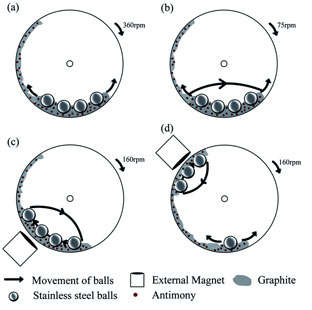

Ball Mill
SBM ball mill is one of the new high efficient grinding machine,which is widely used in the in various types of stone grinding plant, ore benefication, electricity, cement and chemical industries.This new type ball mill with high comminution ratio, it can carry out dry or wet pulverizing and can meet demand for sustainable large-scale production.
Shanghai SBM has devoted itself to producing energy-saving industry ball mill for our honored customers. Besides, SBM energy-saving mining ball mill can offer a grinding solution near the quarries. So it can significantly reduce the operation cost and make mining activities more convenient.
Main Parts Of Ball Mill
The most widely used in the production of a variety of ores are wet overflow ball mill and wet grate ball mill. Aside from common ball mills there is a second type of ball mill called planetary ball mill Planetary ball mills and The grinding balls. Planetary ball mills are smaller than common ball mills and mainly used in laboratories for grinding sample material down to very small sizes.
The main part of the ball mill mainly include feeding part, discharging part, a rotary part, a transmission part (reducer, small gear, motors, electrical control) and other parts. Hollow shaft adopts steel castings, the liner is detachable, slewing gear hobbing with casting, the cylinder body with wear-resistant liner, with good resistance to wear. The machine runs smoothly, the work is reliable.
The ball mill host comprises a cylinder body, cylinder body made of inlaid useful wear-resistant material bearing cylinder liner, and maintain its rotation of the bearing, but also have the driving part, such as a motor, pulley,transmission gear, V-belt etc..
Ball Mill Working Principle
To be chosen according to the grinding material, material is composed of a ball mill feed end of the hollow shaft is arranged in the tube body, when the ball mill cylinder rotation time, grinding body due to inertia and centrifugal force, the effects of friction, making it attached to the cylinder liner on the cylinder body away, when taken to the height of a certain, because the action of its own gravity and dropped, the grinding body falling like a projectile as the material in the barrel to break.
The cylinder in the turning process, the grinding body also has the sliding phenomenon, to the material in the sliding process to abrasive action, in order to effectively use the grinding effect of material particle size, larger generally twenty orders grinding time, the grinding barrel body with a diaphragm plate is divided into two sections, namely become double storehouse, the material into the when the ball first warehouse was shattered, the material enters the chamber second times, steel section to grinding material, material qualification of ground from the discharge end of the hollow shaft discharge, grinding time to feed small particles of the material, such as sand two coarse fly ash, slag, grinding mill barrel can not be provided with a baffle, become a single cylinder grinding, grinding body can also use steel section.
Raw materials through a hollow shaft neck into a hollow cylinder for grinding, the grinding medium contains a variety of the diameter of the cylinder (steel, steel bar or gravel etc.). When the speed of the rotary cylinder around a horizontal axis with certain, medium and material arranged in the cylinder of the centrifugal force and friction effect, with a certain height cylinder is reached, when self gravity is greater than the centrifugal force, then from the wall in the cylinder projectile whereabouts or rolled down, because of the impact force and crushing ore. At the same time in the mill in the process of rotation, sliding motion between grinding media also produces grinding effect on raw material. After grinding materials through a hollow shaft neck discharge.
Technical Data
| Model | Rotate Speed (r/min) | Grinding Media Weight (T) | Max.Feeding Size(mm) | Discharge Size (mm) | Output(t/h) | Motor Power (KW) |
| Ф900×1800 | 36～38 | 1.5 | ≤20 | 0.075-0.89 | 0.65-2 | 18.5 |
| Ф900×3000 | 36 | 2.7 | ≤20 | 0.075-0.89 | 1.1-3.5 | 22 |
| Ф1200×2400 | 36 | 3 | ≤25 | 0.075-0.6 | 1.5-4.8 | 30 |
| Ф1200×3000 | 36 | 3.5 | ≤25 | 0.074-0.4 | 1.6-5 | 37 |
| Ф1200×4500 | 32.4 | 5 | ≤25 | 0.074-0.4 | 1.6-5.8 | 55 |
| Ф1500×3000 | 29.7 | 7.5 | ≤25 | 0.074-0.4 | 2-5 | 75 |
| Ф1500×4500 | 27 | 11 | ≤25 | 0.074-0.4 | 3-6 | 110 |
| Ф1500×5700 | 28 | 12 | ≤25 | 0.074-0.4 | 3.5-6 | 130 |
| Ф1830×3000 | 25.4 | 11 | ≤25 | 0.074-0.4 | 4-10 | 130 |
| Ф1830×4500 | 25.4 | 15 | ≤25 | 0.074-0.4 | 4.5-12 | 155 |
| Ф1830×6400 | 24.1 | 21 | ≤25 | 0.074-0.4 | 6.5-15 | 210 |
| Ф1830×7000 | 24.1 | 23 | ≤25 | 0.074-0.4 | 7.5-17 | 245 |
| Ф2100×3000 | 23.7 | 15 | ≤25 | 0.074-0.4 | 6.5-36 | 155 |
| Ф2100×4500 | 23.7 | 24 | ≤25 | 0.074-0.4 | 8-43 | 245 |
| Ф2100×7000 | 23.7 | 26 | ≤25 | 0.074-0.4 | 8-48 | 280 |
| Ф2200×4500 | 21.5 | 27 | ≤25 | 0.074-0.4 | 9-45 | 280 |
| Ф2200×6500 | 21.7 | 35 | ≤25 | 0.074-0.4 | 14-26 | 380 |
| Ф2200×7000 | 21.7 | 35 | ≤25 | 0.074-0.4 | 15-28 | 380 |
| Ф2200×7500 | 21.7 | 35 | ≤25 | 0.074-0.4 | 15-30 | 380 |
| Ф2400×3000 | 21 | 23 | ≤25 | 0.074-0.4 | 7-50 | 245 |
| Ф2400×4500 | 21 | 30 | ≤25 | 0.074-0.4 | 8.5-60 | 320 |
| Ф2700×4000 | 20.7 | 40 | ≤25 | 0.074-0.4 | 12-80 | 400 |
| Ф2700×4500 | 20.7 | 48 | ≤25 | 0.074-0.4 | 12-90 | 430 |
| Ф3200×4500 | 18 | 65 | ≤25 | 0.074-0.4 | According to the process condition | 800 |
Table 1: Technical Parameters of Wet Type and Rolling Bearing supporting the Ball Mill
| Model | Shell Size(mm) | Effective Volume(m3) | Grinding Media Weight(t) | Rotate Speed(r/min) | Power(Kw) | Discharge Size(㎜) | Output(t/h) | Remark |
| Dia×Length | ||||||||
| GMQG1530 | 1500×3000 | 4 | 8 | 27.6 | 75 | 0.8-0.074 | 12-2.8 | 380V |
| GMQG1535 | 1500×3500 | 4.6 | 11 | 27.6 | 75-90 | 0.8-0.074 | 14-3.4 | 380V |
| GMQG1830 | 1800×3000 | 6.5 | 13 | 25.3 | 132 | 0.8-0.074 | 21-4.8 | 380V |
| GMQG1835 | 1800×3500 | 7.58 | 16 | 25.3 | 160 | 0.8-0.074 | 25-5.8 | 380V |
| GMQG1840 | 1800×4000 | 8.65 | 17.3 | 25.3 | 185 | 0.8-0.074 | 28-6.6 | 380V |
| GMQG1845 | 1800×4500 | 9.75 | 19.5 | 25.3 | 210 | 0.8-0.074 | 31-7.2 | 380V |
| GMQG2122 | 2100×2200 | 6.7 | 14.7 | 23.8 | 160 | 0.8-0.074 | 24-5.3 | 380V |
| GMQG2130 | 2100×3000 | 9.2 | 17 | 23.8 | 185 | 0.8-0.074 | 26-6.0 | 380V |
| GMQG2136 | 2100×3600 | 11 | 19 | 23.8 | 210 | 0.8-0.074 | 29-6.5 | 380V |
| GMQG2140 | 2100×4000 | 12.2 | 20.5 | 23.8 | 220 | 0.8-0.074 | 32-7.2 | 380V |
| GMQG2145 | 2100×4500 | 13.8 | 22 | 23.8 | 250 | 0.8-0.074 | 36-8.1 | 380V |
| GMQG2424 | 2400×2400 | 9.8 | 20 | 22.8 | 220 | 0.8-0.074 | 32-6.6 | 380V |
| GMQG2430 | 2400×3000 | 12.2 | 25 | 22.8 | 250 | 0.8-0.074 | 38-7.5 | 380V |
| GMQG2436 | 2400×3600 | 14.6 | 30 | 22.8 | 280 | 0.8-0.074 | 42-8.5 | 380V |
| GMQG2440 | 2400×4000 | 16.2 | 33 | 22.8 | 355 | 0.8-0.074 | 47-9.5 | 380V |
| GMQG2445 | 2400×4500 | 18.2 | 37 | 22.8 | 400 | 0.8-0.074 | 55-10.5 | 380V |
| GMQG2721 | 2700×2100 | 10.7 | 24 | 21.7 | 280 | 3.0-0.074 | 84-8.5 | 6-10KV |
| GMQG2727 | 2700×2700 | 13.8 | 29 | 21.7 | 315 | 3.0-0.074 | 105-9.0 | 6-10KV |
| GMQG2730 | 2700×3000 | 15.3 | 32.5 | 21.7 | 355 | 3.0-0.074 | 120-10 | 6-10KV |
| GMQG2736 | 2700×3600 | 18.4 | 39 | 21.7 | 400 | 3.0-0.074 | 145-12 | 6-10KV |
| GMQG2740 | 2700×4000 | 20.5 | 43 | 21.7 | 450 | 3.0-0.074 | 159-13 | 6-10KV |
| GMQG2745 | 2700×4500 | 23 | 50 | 21.7 | 500 | 3.0-0.074 | 180-15 | 6-10KV |
| GMQG3231 | 3200×3100 | 22.65 | 46.9 | 18.6 | 500 | 3.0-0.074 | 182-16 | 6-10KV |
| GMQG3236 | 3200×3600 | 26.2 | 52 | 18.6 | 560 | 3.0-0.074 | 190-19 | 6-10KV |
| GMQG3240 | 3200×4000 | 29.2 | 57 | 18.6 | 630 | 3.0-0.074 | 210-22 | 6-10KV |
| GMQG3245 | 3200×4500 | 32.8 | 65 | 18.6 | 710-800 | 3.0-0.074 | 235-29 | 6-10KV |
| GMQG3254 | 3200×5400 | 39.2 | 81.6 | 18.6 | 800-1000 | 3.0-0.074 | 280-35 | 6-10KV |
| GMQG3640 | 3600×4000 | 35.6 | 75 | 17.3 | 800 | 3.0-0.074 | 230-25 | 6-10KV |
| GMQG3645 | 3600×4500 | 40.8 | 88 | 17.3 | 1000 | 3.0-0.074 | 259-29 | 6-10KV |
| GMQG3650 | 3600×5000 | 45.3 | 96 | 17.3 | 1120 | 3.0-0.074 | 288-35 | 6-10KV |
| GMQG3660 | 3600×6000 | 54.4 | 117 | 17.3 | 1250-1500 | 3.0-0.074 | 310-38 | 6-10KV |
| GMQG3685 | 3600×8500 | 79 | 144 | 17.3 | 1800 | 3.0-0.074 | 450-50 | 6-10KV |
Get Price And Support
Simply complete the form below, click submit, you will get the price list and a SBM representative will contact you within one business day. Please also feel free to contact us by email or phone. ( * Denotes a required field).